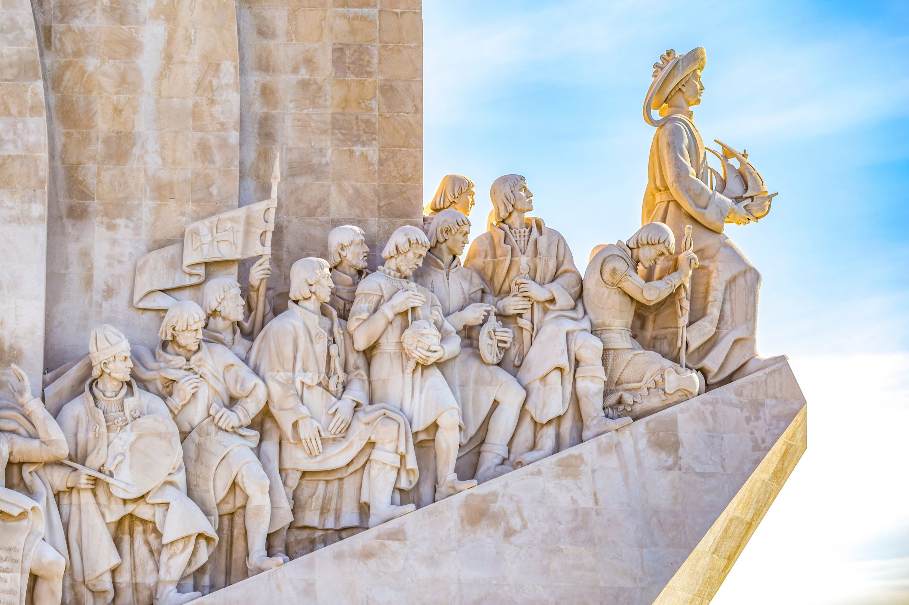
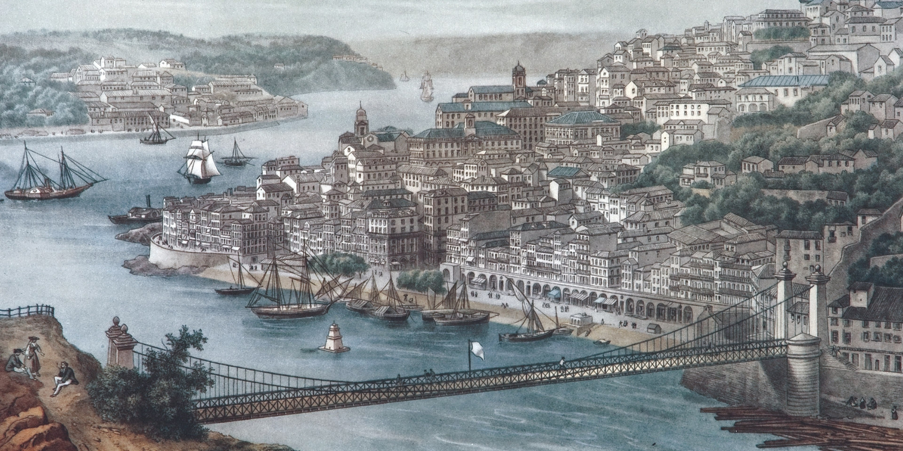
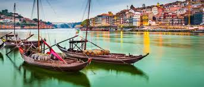
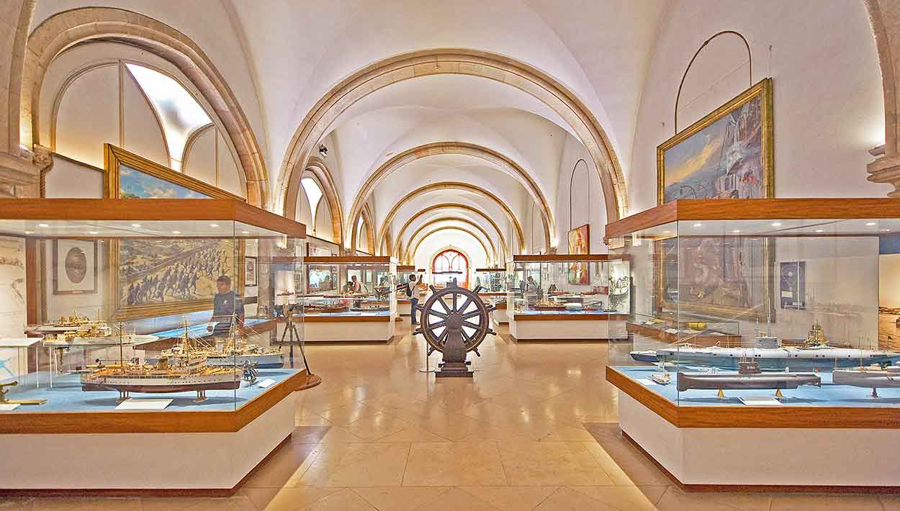
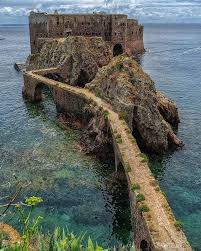
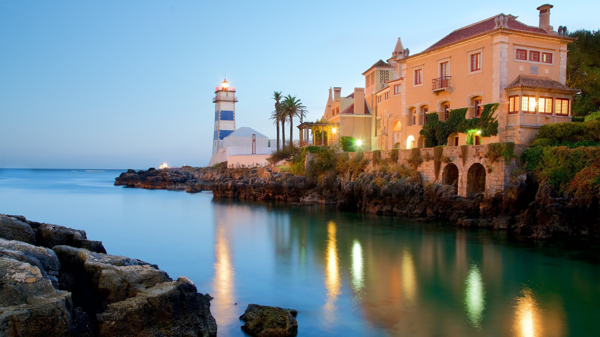

Age of Discovery
Explore monuments and museums celebrating Portugal's pioneering role in global maritime exploration.

Historic Ports
Visit ancient harbors that launched expeditions to Africa, Asia, and the Americas during the 15th-16th centuries.

Traditional Boats
See colorful fishing boats and traditional vessels that have plied Portuguese waters for generations.

Naval Museums
Discover ship models, navigation instruments, and artifacts from Portugal's seafaring history.

Coastal Fortresses
Tour defensive fortifications built to protect Portugal's strategic coastline and maritime trade routes.

Lighthouse Tours
Visit historic lighthouses that have guided sailors safely along Portugal's rugged Atlantic shores.